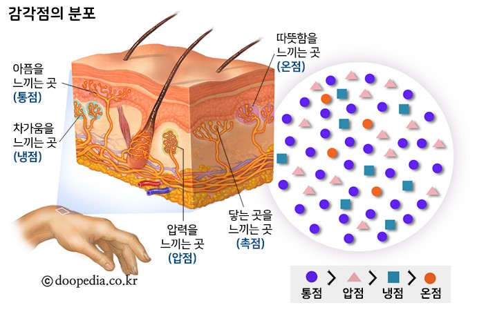

피부
-피부를 통해 부드러움, 딱딱함, 차가움, 따뜻함, 아픔 등을 느끼는 것을 피부 감각이라 한다.
-사람의 피부에는 접촉, 압박, 따뜻함, 차가움, 통증을 느끼는 감각점이 분포 물체가 피부에 닿으면 피부에 있는 감각점에서 자극을 받아들이고 이 자극은 피부 감각 신경을 통해 뇌로 전달
-피부의 감각점은 몸 전체에 고르게 분포하지 않고 부위에 따라 다르게 분포한다, 특정 감각점이 많은 부위는 그 감각점이 받아들이는 자극에 더 민감 따라서 몸의 부위에 따라 접촉에 민감하거나 통증이 심하게 느껴진다.

감각점
-통점 : 통증을 느낀다.
-압점 : 압박을 느낀다.
-냉점 : 차가움을 느낀다.
-온점 : 따뜻함을 느낀다.
-촉점 : 접촉을 느낀다.
-피부 감각 신경 : 감각점에서 받아들인 자극을 뇌로 전달한다.
우리는 같은 온도에서 따뜻하게 느끼기도 차갑게 느끼기도 함 이는 처음보다 온도가 높아지면 피부의 온점이 자극을 받아들이고, 처음보다 온도가 낮으면 피부의 냉점이 자극을 받아들이기 때문에